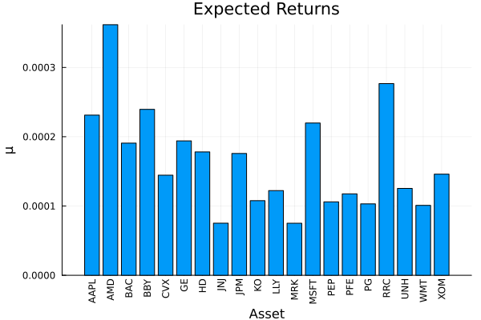
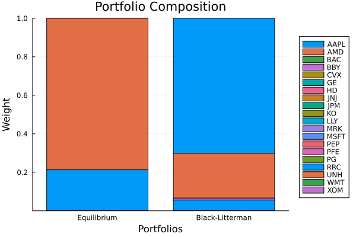
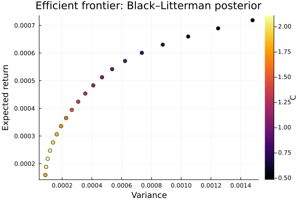

The source files can be found in examples/.
Black–Litterman
The estimators so far take the data at face value. But you often have a view — "Apple will return 8 bps a day", "Microsoft will beat AMD", "tech as a group will do well" — and want to fold that conviction into the prior without throwing away what the market already tells you. That is exactly what the Black–Litterman model does: it starts from a neutral equilibrium prior (the returns implied by holding the market), then tilts it toward your views, weighting each by its confidence. The result is a posterior mean and covariance you can feed to any optimiser.
This is the first of a short, sequenced arc on view-based priors — Black–Litterman here, then Entropy Pooling, then Opinion Pooling. Each builds on the last, but each page also stands alone.
In PortfolioOptimisers, BlackLittermanPrior takes a base estimator pe (whose default mean is EquilibriumExpectedReturns), a UniverseSets that names assets and groups, and a views estimator. Views are written as plain string constraints through a LinearConstraintEstimator, and their conviction is controlled by views_conf and the global scaling parameter tau.
Reach for Black–Litterman when you hold subjective forecasts — absolute ("this asset will return x"), relative ("A will beat B"), or group-level ("tech beats energy") — and want a principled blend of those views with a market-equilibrium baseline rather than overwriting the mean wholesale. It is the gentlest of the view priors: views enter as a Gaussian update on the mean. If your views are about quantities other than the mean (variance, tail risk, skew), or you want them as hard distributional constraints, see Entropy Pooling.
using PortfolioOptimisers, PrettyTablesmmtfmt = (v, i, j) -> begin if j == 1 return v else return isa(v, Number) ? "$(round(v*100, digits=4)) %" : v endend;resfmt = (v, i, j) -> begin if j == 1 return v else return isa(v, Number) ? "$(round(v*100, digits=3)) %" : v endend;1. ReturnsResult data
We use the same S&P 500 slice as the other examples.
using CSV, TimeSeries, DataFramesX = TimeArray(CSV.File(joinpath(@__DIR__, "..", "SP500.csv.gz")); timestamp = :Date)[(end - 252):end]rd = prices_to_returns(X)ReturnsResult
nx ┼ 20-element Vector{String}
X ┼ 252×20 Matrix{Float64}
nf ┼ nothing
F ┼ nothing
nb ┼ nothing
B ┼ nothing
ts ┼ 252-element Vector{Date}
iv ┼ nothing
ivpa ┼ nothing
nz ┼ nothing
Z ┴ nothing
2. The equilibrium prior
Black–Litterman does not start from the sample mean. Its baseline is the EquilibriumExpectedReturns vector — the returns implied by the market via reverse optimisation ($\\boldsymbol{\\pi} = \\lambda \\mathbf{\\Sigma} \\boldsymbol{w}_{mkt}$). This matters because the raw sample mean over a single year is noisy and often negative, whereas the equilibrium prior is a smoother, economically-motivated anchor that the views then nudge.
We build both and compare them.
pr_sample = prior(EmpiricalPrior(), rd)pr_eq = prior(EmpiricalPrior(; me = EquilibriumExpectedReturns()), rd)pretty_table(DataFrame(["Assets" => rd.nx, "Sample mean" => pr_sample.mu, "Equilibrium" => pr_eq.mu]); formatters = [mmtfmt], title = "Sample mean vs equilibrium prior") Sample mean vs equilibrium prior
┌────────┬─────────────┬─────────────┐
│ Assets │ Sample mean │ Equilibrium │
│ String │ Float64 │ Float64 │
├────────┼─────────────┼─────────────┤
│ AAPL │ -0.1126 % │ 0.0231 % │
│ AMD │ -0.2809 % │ 0.0362 % │
│ BAC │ -0.0934 % │ 0.0191 % │
│ BBY │ -0.0279 % │ 0.0239 % │
│ CVX │ 0.1945 % │ 0.0144 % │
│ GE │ -0.0339 % │ 0.0194 % │
│ HD │ -0.0707 % │ 0.0178 % │
│ JNJ │ 0.0307 % │ 0.0075 % │
│ JPM │ -0.0417 % │ 0.0176 % │
│ KO │ 0.0497 % │ 0.0108 % │
│ LLY │ 0.1305 % │ 0.0122 % │
│ MRK │ 0.1669 % │ 0.0075 % │
│ MSFT │ -0.1206 % │ 0.022 % │
│ PEP │ 0.039 % │ 0.0106 % │
│ PFE │ -0.0256 % │ 0.0118 % │
│ PG │ -0.0081 % │ 0.0103 % │
│ RRC │ 0.1824 % │ 0.0277 % │
│ UNH │ 0.0364 % │ 0.0125 % │
│ WMT │ 0.0163 % │ 0.0101 % │
│ XOM │ 0.2637 % │ 0.0146 % │
└────────┴─────────────┴─────────────┘Noisy sample-mean expected returns.
using StatsPlots, GraphRecipesSmoother market-equilibrium prior.
plot_mu(pr_sample, rd.nx)plot_mu(pr_eq, rd.nx)
3. Naming assets and groups
Views refer to assets and groups by name, so we declare a UniverseSets: the nx key holds every asset, and we add two illustrative groups so we can express a group-level view.
sets = UniverseSets(; dict = Dict("nx" => rd.nx, "tech" => ["AAPL", "AMD", "MSFT"], "energy" => ["CVX"]))UniverseSets
xkey ┼ String: "nx"
uxkey ┼ String: "ux"
fkey ┼ String: "nf"
ufkey ┼ String: "uf"
zkey ┼ String: "nz"
dict ┴ Dict{String, Vector{String}}: Dict("nx" => ["AAPL", "AMD", "BAC", "BBY", "CVX", "GE", "HD", "JNJ", "JPM", "KO", "LLY", "MRK", "MSFT", "PEP", "PFE", "PG", "RRC", "UNH", "WMT", "XOM"], "tech" => ["AAPL", "AMD", "MSFT"], "energy" => ["CVX"])
4. The three kinds of views
Views are plain strings, and Black–Litterman understands three shapes:
- Absolute —
"AAPL == 0.0008": Apple returns 8 bps a day. - Relative —
"MSFT - AMD == 0.0005": Microsoft beats AMD by 5 bps. - Group —
"tech == 0.0006": the tech group averages 6 bps.
We build one posterior per view type and compare the resulting expected returns against the equilibrium prior. A key property to notice: BL views are soft. The posterior does not reproduce the view exactly — it Bayesian-blends the view with the equilibrium anchor, so the realised tilt is partial (the relative gap below lands well short of the stated 5 bps).
tau = 1 / size(rd.X, 1)pr_abs = prior(BlackLittermanPrior(; sets = sets, tau = tau, views = LinearConstraintEstimator(; val = ["AAPL == 0.0008"])), rd)pr_rel = prior(BlackLittermanPrior(; sets = sets, tau = tau, views = LinearConstraintEstimator(; val = ["MSFT - AMD == 0.0005"])), rd)pr_grp = prior(BlackLittermanPrior(; sets = sets, tau = tau, views = LinearConstraintEstimator(; val = ["tech == 0.0006"])), rd)pretty_table(DataFrame(["Assets" => rd.nx, "Equilibrium" => pr_eq.mu, "Absolute" => pr_abs.mu, "Relative" => pr_rel.mu, "Group" => pr_grp.mu]); formatters = [mmtfmt], title = "Posterior expected returns by view type") Posterior expected returns by view type
┌────────┬─────────────┬──────────┬───────────┬──────────┐
│ Assets │ Equilibrium │ Absolute │ Relative │ Group │
│ String │ Float64 │ Float64 │ Float64 │ Float64 │
├────────┼─────────────┼──────────┼───────────┼──────────┤
│ AAPL │ 0.0231 % │ 0.0516 % │ 0.0135 % │ 0.0363 % │
│ AMD │ 0.0362 % │ 0.0719 % │ -0.0013 % │ 0.0594 % │
│ BAC │ 0.0191 % │ 0.0338 % │ 0.011 % │ 0.0272 % │
│ BBY │ 0.0239 % │ 0.0434 % │ 0.0133 % │ 0.0345 % │
│ CVX │ 0.0144 % │ 0.0222 % │ 0.0089 % │ 0.0187 % │
│ GE │ 0.0194 % │ 0.0348 % │ 0.0082 % │ 0.0279 % │
│ HD │ 0.0178 % │ 0.0327 % │ 0.0124 % │ 0.0257 % │
│ JNJ │ 0.0075 % │ 0.0126 % │ 0.0074 % │ 0.0096 % │
│ JPM │ 0.0176 % │ 0.0307 % │ 0.0109 % │ 0.0247 % │
│ KO │ 0.0108 % │ 0.019 % │ 0.0089 % │ 0.0145 % │
│ LLY │ 0.0122 % │ 0.0202 % │ 0.0106 % │ 0.0162 % │
│ MRK │ 0.0075 % │ 0.012 % │ 0.0084 % │ 0.0092 % │
│ MSFT │ 0.022 % │ 0.0451 % │ 0.0166 % │ 0.0349 % │
│ PEP │ 0.0106 % │ 0.0192 % │ 0.0093 % │ 0.0144 % │
│ PFE │ 0.0118 % │ 0.019 % │ 0.0104 % │ 0.0154 % │
│ PG │ 0.0103 % │ 0.0184 % │ 0.0094 % │ 0.014 % │
│ RRC │ 0.0277 % │ 0.0438 % │ 0.0186 % │ 0.0366 % │
│ UNH │ 0.0125 % │ 0.022 % │ 0.0103 % │ 0.0171 % │
│ WMT │ 0.0101 % │ 0.0174 % │ 0.0095 % │ 0.0133 % │
│ XOM │ 0.0146 % │ 0.0224 % │ 0.0095 % │ 0.0186 % │
└────────┴─────────────┴──────────┴───────────┴──────────┘5. Controlling conviction with views_conf
How hard the posterior leans on a view is set by views_conf — a confidence in $[0, 1]$ per view. At low confidence the posterior stays near the equilibrium prior; at high confidence it moves most of the way to the view. We sweep the confidence on a single absolute view and watch Apple's posterior expected return climb from the equilibrium baseline toward the 8 bps target.
abs_view = LinearConstraintEstimator(; val = ["AAPL == 0.0008"])confs = [0.1, 0.3, 0.5, 0.7, 0.9]pr_confs = [prior(BlackLittermanPrior(; sets = sets, tau = tau, views = abs_view, views_conf = [c]), rd) for c in confs]i_aapl = findfirst(==("AAPL"), rd.nx)pretty_table(DataFrame(; confidence = confs, Symbol("AAPL posterior") => [p.mu[i_aapl] for p in pr_confs]); formatters = [mmtfmt], title = "AAPL posterior vs view confidence (equilibrium ≈ $(round(pr_eq.mu[i_aapl]*100; digits=4))%, view = 0.08%)")AAPL posterior vs view confidence (equilibrium ≈ 0.0231%, view = 0.08%)
┌────────────┬────────────────┐
│ confidence │ AAPL posterior │
│ Float64 │ Float64 │
├────────────┼────────────────┤
│ 0.1 │ 0.0288 % │
│ 0.3 │ 0.0402 % │
│ 0.5 │ 0.0516 % │
│ 0.7 │ 0.0629 % │
│ 0.9 │ 0.0743 % │
└────────────┴────────────────┘6. The posterior covariance
Black–Litterman updates the covariance too, not only the mean: the posterior reflects the extra information the views carry. With a small tau the adjustment is modest, but it is there — compare Apple's posterior variance against the empirical one.
pretty_table(DataFrame(["quantity" => ["AAPL variance"], "Empirical" => [pr_sample.sigma[i_aapl, i_aapl]], "BL posterior" => [pr_abs.sigma[i_aapl, i_aapl]]]); formatters = [mmtfmt], title = "Posterior covariance adjustment") Posterior covariance adjustment
┌───────────────┬───────────┬──────────────┐
│ quantity │ Empirical │ BL posterior │
│ String │ Float64 │ Float64 │
├───────────────┼───────────┼──────────────┤
│ AAPL variance │ 0.05 % │ 0.0501 % │
└───────────────┴───────────┴──────────────┘7. From views to portfolios
Finally, the payoff: the views reshape the portfolio. We do this two ways. First a single maximum-ratio portfolio under the equilibrium prior vs the Apple-bullish posterior, then a full efficient frontier under each so the tilt is visible across the whole risk/return range.
using Clarabelslv = Solver(; name = :clarabel1, solver = Clarabel.Optimizer, settings = Dict("verbose" => false), check_sol = (; allow_local = true, allow_almost = true))rf = 4.2 / 100 / 252res_eq = optimise(MeanRisk(; obj = MaximumRatio(; rf = rf), opt = JuMPOptimiser(; pe = pr_eq, slv = slv)))res_bl = optimise(MeanRisk(; obj = MaximumRatio(; rf = rf), opt = JuMPOptimiser(; pe = pr_abs, slv = slv)))pretty_table(DataFrame(["Assets" => rd.nx, "Equilibrium" => res_eq.w, "Black-Litterman" => res_bl.w]); formatters = [resfmt], title = "Maximum-ratio weights: equilibrium vs Black–Litterman")Maximum-ratio weights: equilibrium vs Black–Litterman
┌────────┬─────────────┬─────────────────┐
│ Assets │ Equilibrium │ Black-Litterman │
│ String │ Float64 │ Float64 │
├────────┼─────────────┼─────────────────┤
│ AAPL │ 0.0 % │ 70.119 % │
│ AMD │ 78.713 % │ 23.276 % │
│ BAC │ 0.0 % │ 0.0 % │
│ BBY │ 0.0 % │ 1.041 % │
│ CVX │ 0.0 % │ 0.0 % │
│ GE │ 0.0 % │ 0.0 % │
│ HD │ 0.0 % │ 0.0 % │
│ JNJ │ 0.0 % │ 0.0 % │
│ JPM │ 0.0 % │ 0.0 % │
│ KO │ 0.0 % │ 0.0 % │
│ LLY │ 0.0 % │ 0.0 % │
│ MRK │ 0.0 % │ 0.0 % │
│ MSFT │ 0.0 % │ 0.0 % │
│ PEP │ 0.0 % │ 0.0 % │
│ PFE │ 0.0 % │ 0.0 % │
│ PG │ 0.0 % │ 0.0 % │
│ RRC │ 21.287 % │ 5.563 % │
│ UNH │ 0.0 % │ 0.0 % │
│ WMT │ 0.0 % │ 0.0 % │
│ XOM │ 0.0 % │ 0.0 % │
└────────┴─────────────┴─────────────────┘The composition plot makes the maximum-ratio tilt visible.
plot_stacked_bar_composition([res_eq, res_bl], rd; xticks = (1:2, ["Equilibrium", "Black-Litterman"]))
And the efficient frontiers: minimum-risk portfolios across a sweep of return targets, under the equilibrium prior and the Black–Litterman posterior. The view shifts the whole frontier.
fr_eq = optimise(MeanRisk(; obj = MinimumRisk(), opt = JuMPOptimiser(; pe = pr_eq, slv = slv, ret = ArithmeticReturn(; settings = JuMPReturnsSettings(; lb = Frontier(; N = 20))))))fr_bl = optimise(MeanRisk(; obj = MinimumRisk(), opt = JuMPOptimiser(; pe = pr_abs, slv = slv, ret = ArithmeticReturn(; settings = JuMPReturnsSettings(; lb = Frontier(; N = 20))))))plot_measures(fr_eq.w, pr_eq; x = Variance(), y = ExpectedReturn(; rt = fr_eq.ret), title = "Efficient frontier: equilibrium prior", xlabel = "Variance", ylabel = "Expected return")plot_measures(fr_bl.w, pr_abs; x = Variance(), y = ExpectedReturn(; rt = fr_bl.ret), title = "Efficient frontier: Black–Litterman posterior", xlabel = "Variance", ylabel = "Expected return")
This page was generated using Literate.jl.